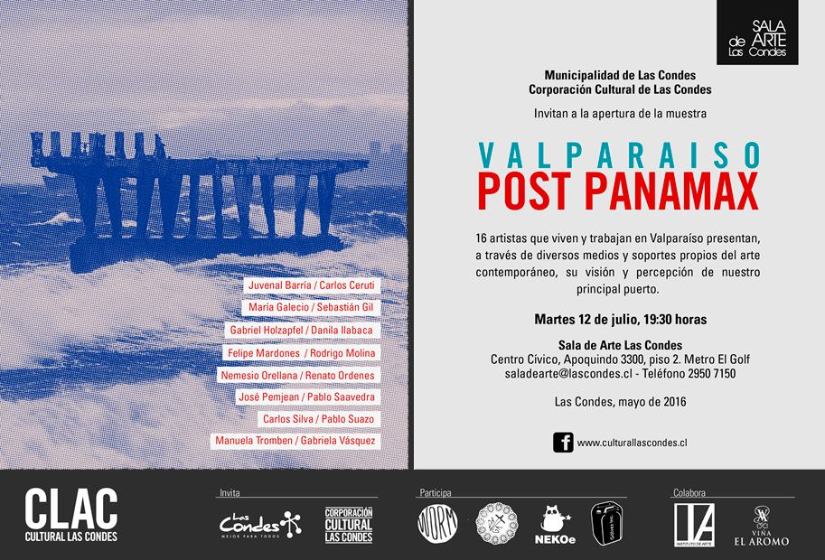
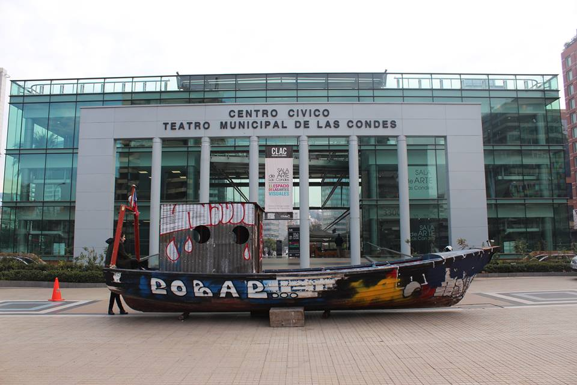
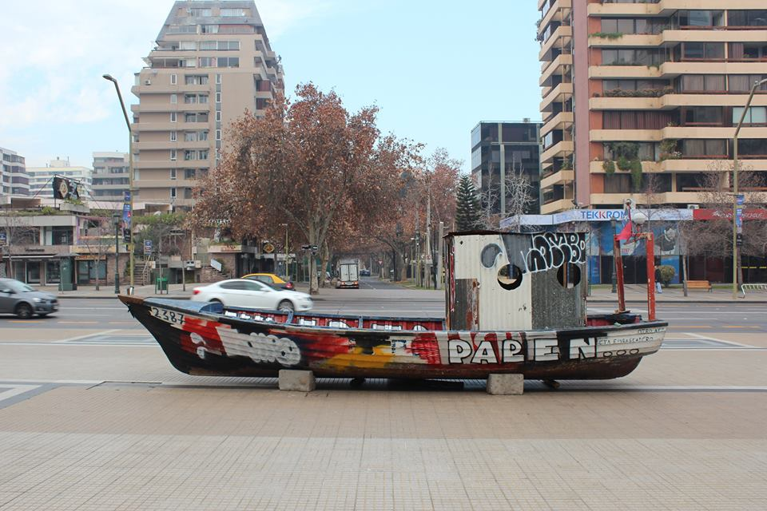
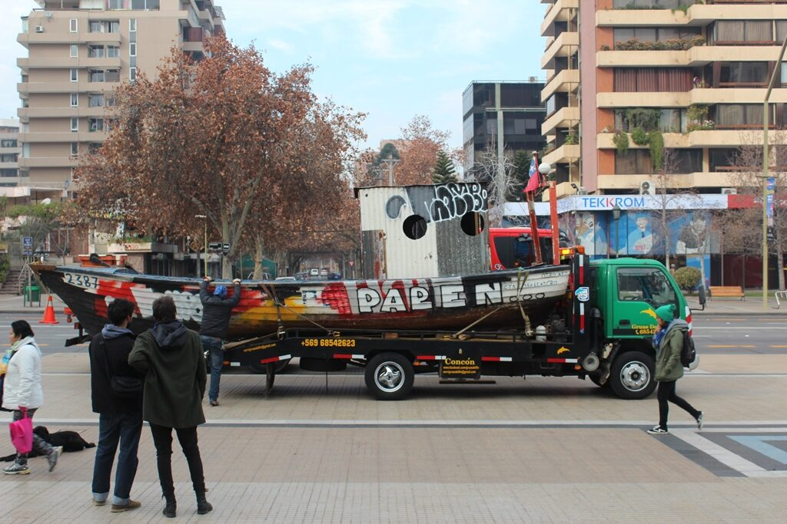
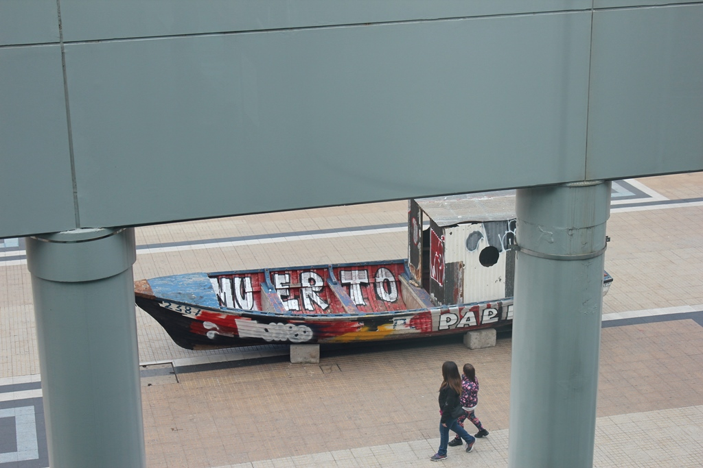
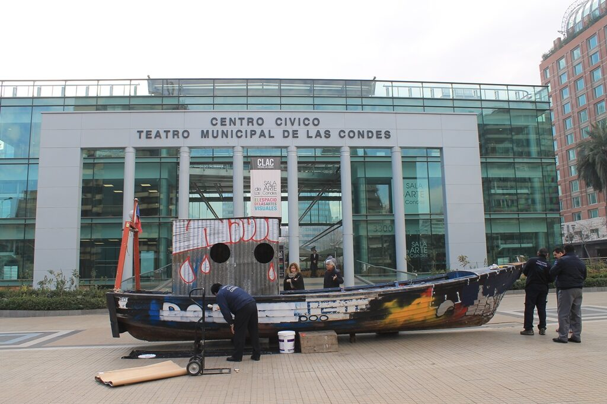

Dossier Nº 007
Mar Muerto / Paren de Robar
Recuperación e intervención de "El Petro", un bote de madera varado tras fuertes temporales y marejadas en Caleta Loncura, pequeña caleta de pescadores artesanales al norte de Quintero. Una vez terminada la exposición, el bote volvió al mar. Julio, 2016.

Los pescadores artesanales
Los pescadores artesanales representan parte del patrimonio social e identitario de Quintero y de Valparaíso: trabajadores que día a día luchan por mantener viva su tradicional actividad, ante el crecimiento de la ciudad y la sobreexplotación de las flotas industriales de arrastre.
El lanchón en Apoquindo
Instalado en plena Avenida Apoquindo, en Santiago, el bote fue intervenido con motivos propios de los pescadores de Caleta Portales — principal trinchera de resistencia contra la Ley de Pesca que permite a las grandes industrias practicar un sistema de arrastre depredador. De manera insólita, personeros de la Municipalidad de las Condes, por entonces dirigida por el alcalde De La Maza, se apersonaron para borrar la palabra robar con pintura blanca. Finalmente, decidieron remover el bote de su ubicación originalmente concebida para ocultarlo en el pasillo interior del inmueble cultural.






33°25′S · 70°36′O